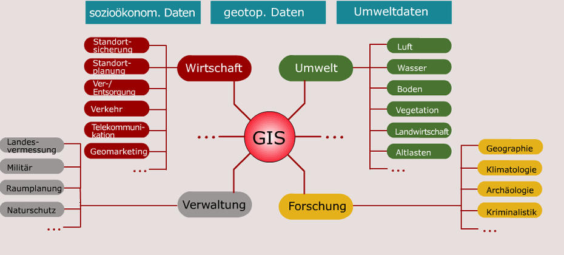
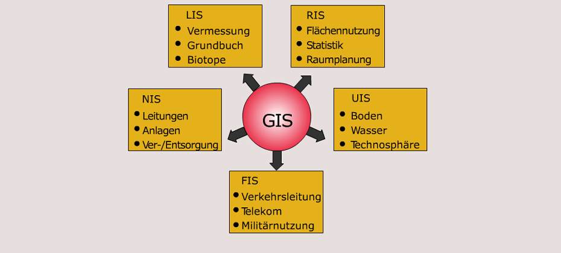

GIS - Geographisches Informationssystem - a computerized system that can store, retrieve, manipulate, visualize and analyse spatial data - ermöglicht die Integration unterschiedlicher Arten von Daten in einem System
Informationssystem - Erfassung - Speicherung - Aktualisierung - Verarbeitung - Wiedergabe
Datenverarbeitung - Erfassung - Verwaltung - Analyse - Modellierung - Visualisierung
Geodaten (Spatial Data) - Geographische Daten - Informationen über die Lage und Form (Geometriedaten) einer Erscheinung (Objekt) auf der Erdoberfläche und über die (nicht geometrischen) Eigenschaften (Attributdaten) dieser Erscheinung (Spektrum). - Geodaten beschreiben folgende Merkmale von Geoobjekten: - Geometrie - Topologie - Thematik - Dynamik
Geoobjekt (Features) - Ein auf der Erde vorhandenes Objekt, das mittels Geodaten eindeutig referenzierbar ist (Wikipedia).
Attributdaten - Eigenschaften eines Geoobjekte - Daten ohne spezifischen Raumbezug (Spektrum) - Bei Vektordaten in der Regel in konventionellen Datenbanken gespeichert - Bei Rasterdaten entspricht der Wert des Attributs dem gespeicherten Wert der Rasterzelle
Layerprinzip - Verschiedene Objekt-klassen oder Variablen in Schichtmodell (Layer) miteinander verknüpft - jede Geometrietyp (oder Attributklasse) wird in eigener Informationsschicht erfasst
EVAP 1. Erfassung 2. Verwaltung 3. Analyse 4. Präsentation
Raumbezogene Datenanalyse 1. Geometrische-topologische Verfahren 2. Statistische Analysen und Mengenoperatoren 3. Modellierung und Simulation
 Quelle: http://www.geoinformation.net/lernmodule/folien/Lernmodul_03/Lerneinheit01/index.html
 Quelle: http://www.geoinformation.net/lernmodule/folien/Lernmodul_03/Lerneinheit01/index.html
In order to visualize natural phenomena, one must first determine how to best represent geographic space. Data models are a set of rules and/or constructs used to describe and represent aspects of the real world in a computer. Two primary data models are available to complete this task: raster data models and vector data models.
Ziel von GIS - rechnergestützte raumbezogene Analysen mit Geodaten erforderlich: digitales Modell der „Wirklichkeit“
Modelle 1. Vektormodell - Welt als leerer Raum, der mit diskreten Objekten (Entitäten) angefüllt ist - Vector data models use points and their associated X, Y coordinate pairs to represent the vertices of spatial features, - hree fundamental vector types exist in geographic information systems (GISs): points, lines, and polygons 2. Rastermodell - Welt als Reihe von Variablen, die an jeder Stelle einen Wert annehmen - The raster data model consists of rows and columns of equally sized pixels interconnected to form a planar surface.
Definition 1
Definition 2
{ some code, part of Definition 2 }Third paragraph of definition 2.